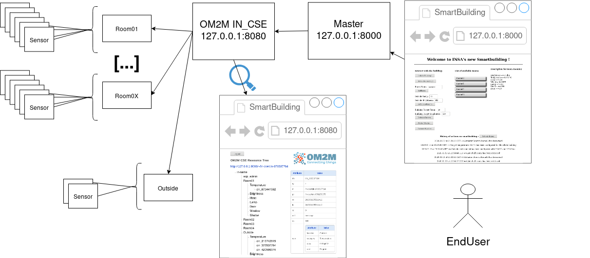

Dans ce cours, nous avons pu apprendre ce qu'est une Architecture Orientée Service (SOA). Cela permet
Dans ce rapport, il vous sera présenté les différentes étapes que l’on a réalisées pour créer cette architecture IoT. En effet, notre application a été développée pour simuler la supervision d’un bâtiment équipé avec différents actionneurs comme le chauffage, la lumière ainsi que des capteurs comme la températures et la luminosité. Avec les données échangées avec les IoTs, et une logique implémentée en java, il nous a été possible de créer des scénarios pour faciliter la vie des utilisateurs. Ainsi quand la température descend, le chauffage peut s’allumer sans intervention humaine.
Dans un premier temps, Pierre et moi-même avons réalisé l'architecure avant de commencer dans la programmation. Afin d'avoir des idées claires,
on a réalisé plusieurs schémas en nous demandant si c'était les bons. Nous avons finalement décidé de partir sur cette version :

Cette étape nous a permis ensuite de décomposé les différentes tâches à faire et les répartir en sprint. En effet, nous avons décidé
de réaliser ce projet en méthode agile en utilisant l'outil IceCrum. Cette première expérience ne s'est pas révélé efficace car cette
méthodologie est utile pour un projet de plus grande envergure. Néanmoins, cela nous a permis de mieux l'appréhender et de pouvoir
l'utiliser en entreprise.
Nous avons rencontré de nombreux problèmes dans ce projet avec Pierre. La partie la plus dure a été de comprendre les consignes qui ne nous parraissaient pas cohérentes avec notre vision des choses. Après avoir subi trois gros changements, nous avons réussi à associer notre architecture aux consignes demandées.
Ce projet m'a permis de mieux comprendre ce qu'est une Architecture Orientée Service tout en utilisant la méthode agile.
Ce projet est important dans le monde de l'IoT mais a un gros défaut, les technologies utilisées sont vieilles et nous n'en
voyons qu'une seule. Pour les requêtes, nous utilisons le protocole HTTP qui n'est pas sécurisé et qui date des début d'internet...
La version (imposée) d'Eclipse que nous avons utilisé a eu sa dernière mise à jour en 2007. Je doute que de tel technologies soient
utilisées en entreprise.
J'ai pu apprendre des choses mais tout en restant sur ma fin au niveau des technologies utilisées.